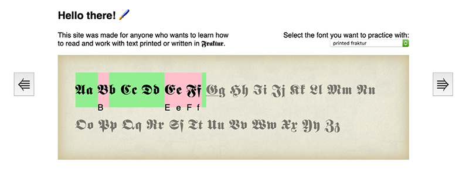

There is a lack of good learning resources for people who need to learn to read old typefaces. The aim of this project was to use the affordances of the digital medium to more effectively teach the skill of reading different kinds of typefaces.
This project sprouted from my interest in digital historiography. I first did a precedent analysis of the ways this skill was being taught digitally at the moment. Based on this analysis defined a list of criteria that my design should fulfil to make better use of the digital medium to provide a better learning experience:
- The learner must receive instant feedback on how they are performing.
- The learner’s degree of mastery must be legible.
- There must be a learning curve with appropriate difficulty at all times.

When I had a working prototype tested it with several history students who needed to learn difficult-to-read primary sources and iterated upon the design based on my observations.
linked entries ⤳